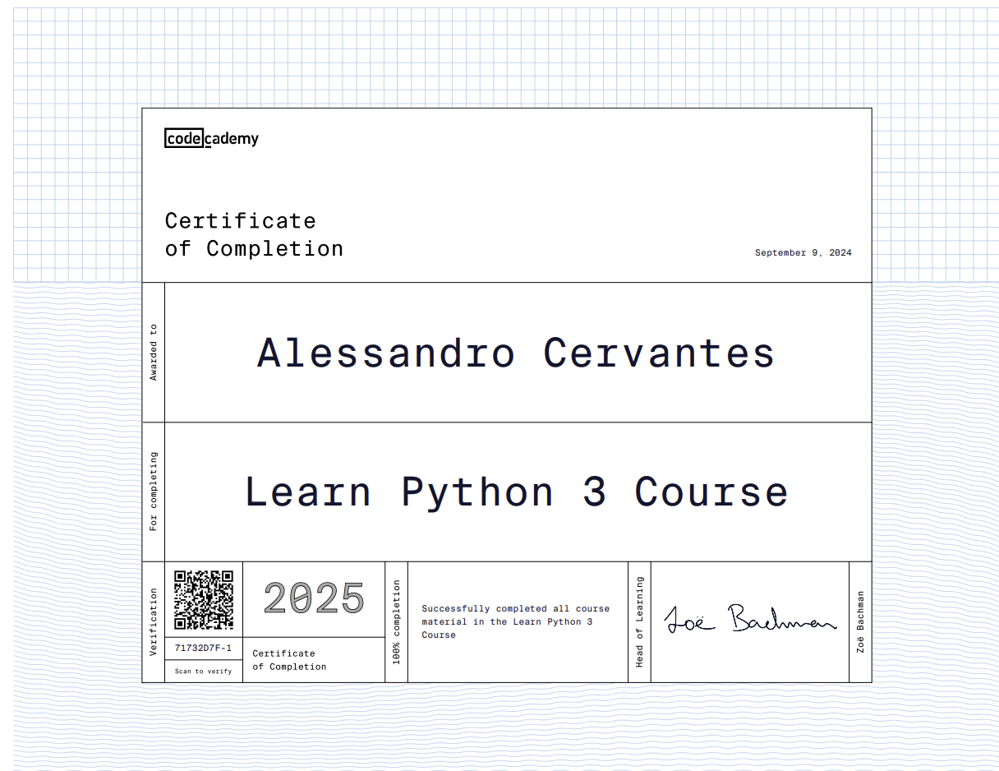
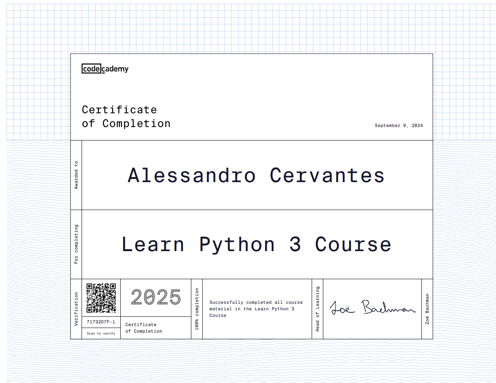
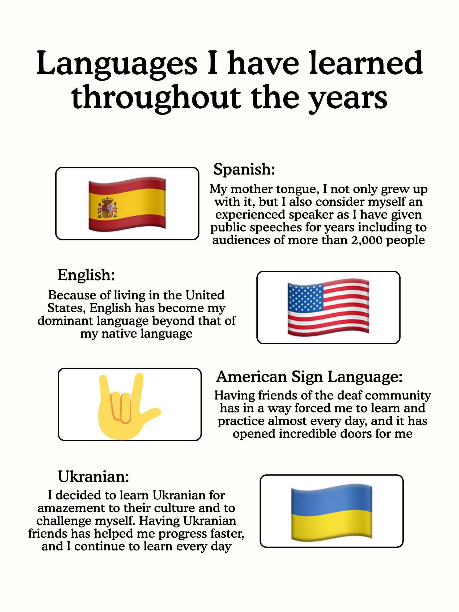

Certifications
I hold multiple programming certifications in Python, CSS, HTML, and have years-long experience in both Java and Lua including completing paid jobs for individuals
I hold multiple programming certifications in Python, CSS, HTML, and have years-long experience in both Java and Lua including completing paid jobs for individuals
I am currently dominant in both English and Spanish, with a steady learning curve in both American Sign Language and Ukranian
Because of my religion, I have given speeches and public readings for years now. The most significant have been in regional assemblies in the Valley with audiences of more than 2,000 people, giving me both the experience and the courage to prepare and deliver impactful presentations